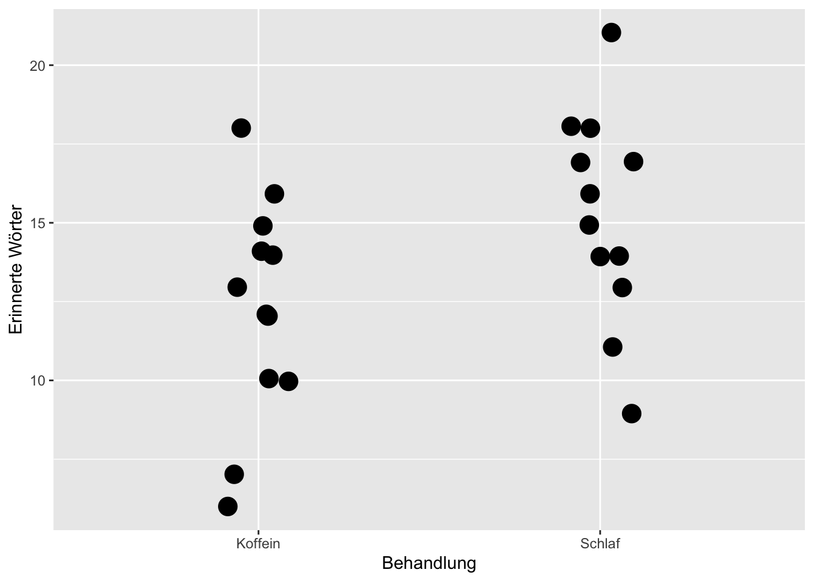
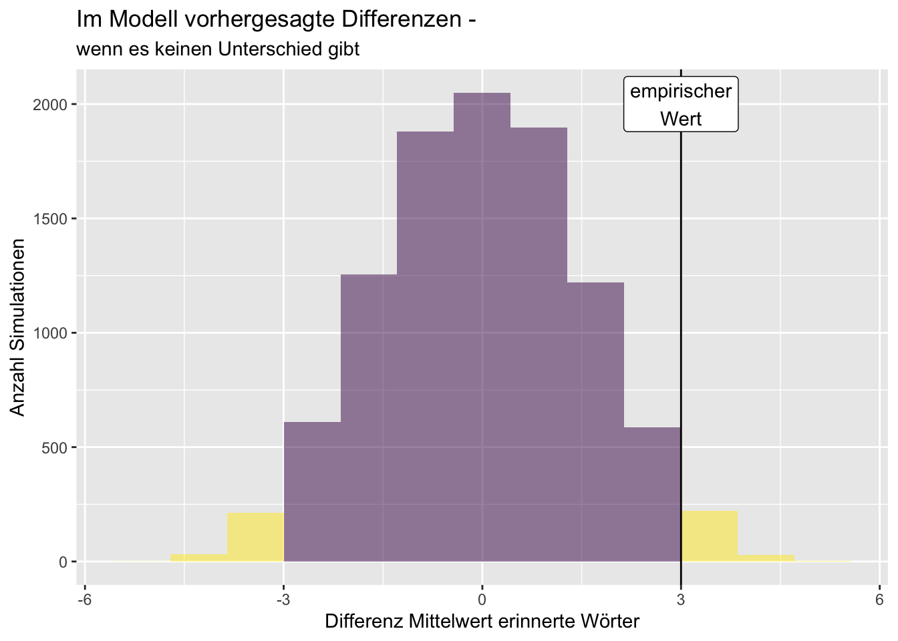
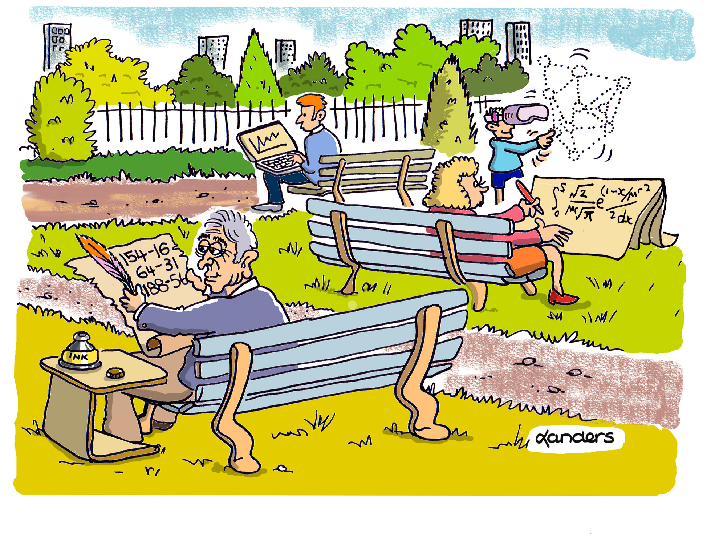

3 Wissenschaftliche Grundlagen
3.1 Einführungsbeispiel
In einer Studie von Mednick u. a. 1 wird untersucht, ob mehrWörter nach einem Nickerchen oder nach Einnahme einerKoffeintablette erinnert werden können.
1 Mednick u. a. (2008), „Comparing the benefits of caffeine, naps and placebo on verbal, motor and perceptual memory”
In der Stichprobe konnten diejenigen, die ein Nickerchen gemacht hatten, im Mittel 15{,}25 Wörter erinnern, die, welche eine Koffeintabelle genommen hatten, 12{,}25. Die Schlafgruppe konnte also drei Wörter mehr erinnern, wie auch das Streudiagramm in Abbildung 3.1 zeigt.

Ist das immer so? Ist der beobachtete Unterschied ungewöhnlich? Diese Fragen müssen wir uns stellen.
Um das herauszufinden, wurde simuliert, wie es wäre, wenn es keinen Unterschied gäbe. Das Histogramm in Abbildung 3.2 zeigt das Ergebnis.

Dies sind die Daten von 10\,000 Zufalls-Simulationen, in denen simuliert wird, dass es eigentlich keinen Unterschied gibt zwischen der Anzahl der Wörter, die nach Kaffeegenuss und nach einem Nickerchen gemerkt werden können. Wir werden später selbst Simulationen durchführen. Ein Histogramm stellt die Ergebnisse (hier: Differenz der Anzahl der gemerkten Wörter) in bestimmten Gruppen dar (z. B. in den Intervallen (3;4], (4;5], …).
Mehr zum Histogramm im Kapitel Explorative Datenanalyse.
Den Artikel zu der oben genannten Studie finden Sie unter https://doi.org/10.1016/j.bbr.2008.04.028. Lesen Sie den Abstract! Was sind die Kernaussagen?
Sie finden die Antwort zu dieser Aufgabe wie zu vielen anderen auch in den Lösungshinweisen im Abschnitt XXX in diesem Kapitel. – Versuchen Sie stets, eine Aufgabe zunächst selbst zu lösen, bevor Sie nachschlagen. Die aktive Auseinandersetzung ist Ihr Schlüssel zum Lernerfolg!
Betrachten Sie noch einmal das Histogramm in Abbildung 3.2. Ist der beobachtete Unterschied von drei Wörtern eher selten? Ja, denn das kommt in weniger als 5% der simulierten Fälle vor. Das spricht dafür, dass es tatsächlich einen Unterschied gibt. Diese Herangehensweise an die Ergebnisse quantitativer Untersuchungen werden wir im Laufe dieser Veranstaltung häufiger nutzen.
 Viele Generationen von Data Science. https://www.CAUSEweb.org/ © J.B. Landers, Überschrift L. Poisson
{kind=link}
Wie sind Sie zu Ihrer Einschätzung gekommen? Wie ordnen Sie die Erkenntnisse der Studie ein? Liefert die Studie Erkenntnisse, die Ihre Einschätzung bestätigen oder eher dagegen sprechen? Sie merken schon, es ist wichtig, sich ein Bild über den aktuellen Stand der Forschung zu machen, um die Ergebnisse einer Analyse einordnen zu können. Daher ist Literaturrecherche ein wichtiger Schritt.
3.2 Grundbegriffe
Lassen Sie uns mit ein paar wichtigen Grundbegriffen derWissenschaftstheorie weitermachen.Wissensschaftlicher Realismus und Konstruktivismus sind unterschiedliche Zugänge zur Realität. Sie lernen die Begriffe Hypothese, Induktionsschluss und Deduktionsschluss kennen sowie die Gütekriterien für die Forschun g. In den empirischen Methoden verwenden wir unterschiedliche Zugänge zu Realität. Laut dem wissenschaftlichen Realismus existiert eine reale Welt unabhängig von der Sicht des Betrachtenden. Dies kommt häufig in den quantitative Methoden zur Anwendung. Im Konstruktivismus wird angenommen, dassWissen über die Wirklichkeit erst durchWahrnehmung erschaffen wird. Qualitative Methoden verfahren häufig nach diesem Ansatz.
Weitere Erkenntnistheorien sind u. a.Empirismus, die Quelle desWissens ist (vorrangig) die Sinneserfahrung, und Rationalismus, die Quelle des Wissens ist (vorrangig) reines Denken.
In der quantitativen Datenanalyse arbeiten wir mit Modellen, i. d. R. mit mathematisch-statistische Modellen. Allgemein formuliert sind Modelle vereinfachte Darstellungen relevanter Teile der Realität. Modelle können u. a. graphisch, verbal oder mathematisch-statistisch dargestellt werden. Durch die Modellbildung und damit einhergehende Formalisierung können Fragestellungen einfacher untersucht werden.
In der quantitativen Datenanalyse müssen häufig Hypothesen formuliert und überprüft werden.
Beispiel für eine Hypothese:
Alle Schwäne sind weiß. Um sie zu beweisen, müssten Sie alle Gewässer besuchen und alle Schwäne anschauen. Sie können sich aber nicht sicher sein, ob Sie nicht vielleicht einen Schwan übersehen haben. Um diese Hypothese zu widerlegen, reicht es, einen schwarzen Schwan zu finden.
Hypothesen werden aus Theorie oder Beobachtungen abgeleitet und stellen Vermutungen über einen bestimmten Sachverhalt an. Sie geben damit eine provisorische Antwort auf ein wissenschaftliches Problem und gehen dabei über den Einzelfall hinaus. Hypothesen sind überprüfbar und falsifizierbar, sind aber nicht beweisbar (Falsifikationsprinzip nach Karl Popper).
Wie könnte die Hypothese zu unserem Einführungsbeispiel lauten?
Theorien wiederum sind Sammlungen von Hypothesen und schlagen eine (vorläufige) Antwort auf eine offene Frage vor. Eine Theorie lässt sich aber kaum im vollen Umfang überprüfen.
Welche Theorien kennen Sie?
Beispiel für Schlusstechniken:
Induktion: Hm, ich habe schon 30 Bohnen aus dem Sack gezogen . . . , alle weiß. Noch 30 Bohnen . . . , schon wieder alle weiß. Ich hab’s: Die Bohnen müssen alle weiß sein!
Deduktion: Ich habe die Bohnen in den Sack gefüllt. Sie waren alle weiß. Jetzt nehme ich eine Bohne aus dem Sack: Sie ist weiß!
Abduktion: Vor mir steht ein Sack; ich sehe, dass weiße Bohnen darin sind. Ich finde eine weiße Bohne irgendwo im Raum auf dem Boden. Daraus schließe ich: Die Bohne muss aus dem Sack sein!
In der Wissenschaft gibt es verschiedene Schlusstechniken: [2, Quelle Beispiel]
2 Stillfried u. a. (2013), Psychologie. Wissenschaftstheorie, philosophische Grundlagen und Geschichte : ein Lehrbuch.
Induktion: Sie beobachten in der Realität Regelmäßigkeiten und schließen daraus auf eine allgemeine Vermutung (Generalisierung— vom Speziellen zum Allgemeinen).
Deduktion: Sie leiten mit Hilfe logischer Regeln aus anderen, i. d. R. allgemeineren Aussagen neue Aussagen ab (vom Allgemeinen ins Spezielle).
Abduktion: Sie verknüpfen verschiedene einzelne Beobachtungen (nicht regelmäßig auftretend) und entwickeln daraus Vermutungen über den Sachverhalt (ebenfalls vom Speziellen zum Allgemeinen).
Eine Dozentin hat mehrfach beobachtet, dass ihre Studierenden interessiert am Fach Statistik sind. Nun schließt sie, dass alle Studierenden interessiert am Fach Statistik sind. Welche Schlussart liegt vor: Induktion, Deduktion oder Abduktion?
Bezüglich der Induktion müssen Sie sich der damit verbundenen Induktionsproblematik bewusst werden. Selbst häufige regelmäßige Beobachtungen lassen nicht sicher auf ein allgemeines Gesetz schließen. Ein widersprechender Fall reicht, um zu zeigen, dass das allgemeine Gesetz nicht für alle Fälle gilt. Daher versuchen wir in der quantitativen Datenanalyse nicht Hypothesen zu beweisen, sondern gehen umgekehrt vor und widerlegen eine Hypothese oder zeigen zumindest, dass sie sehr unwahrscheinlich ist.
Induktion und Abduktion werden häufig zur Bildung von Hypothesen verwendet, während Deduktion zur Überprüfung von Hypothesen eingesetzt wird.
Karl Popper hat sich umfänglich mit diesem Thema beschäftigt. Wer war Karl Popper?
Abschließendwerfen wir einen Blick auf die Gütekriterien der Forschung. Neben ethischen Aspekten wie Diskriminierungsfreiheit und Datenschutz sind folgende Dinge wichtig: Transparenz (das Vorgehen ist dokumentiert und damit reproduzierbar), Objektivität und Validität.
Letztere kann noch unterschieden werden in interne (Gibt es keine anderen Erklärungen für den behaupteten Zusammenhang?) und externe Validität (Können die Ergebnisse auf andere Situationen übertragen werden?).
Empirische Forschungsprojekte können mit quantitativen und qualitativen Methoden durchgeführt werden:
Quantitative Methoden
Messung und numerische Beschreibung der Wirklichkeit (vgl. wissenschaftlichen Realismus).
Allgemeingültige Gesetze für die Grundgesamtheit.
Ein Ausschnitt der beobachteten sozialen Vielfalt wird auf Skalen abgebildet, und es wird mit Häufigkeiten, Mittelwerten, Wahrscheinlichkeiten des Auftretens von Merkmalsausprägungen operiert.
Qualitative Methoden
Verbalisierung der Erfahrungswirklichkeit (vgl. Konstruktivismus).
Wirklichkeitsinterpretationen sind durch spezifische soziale Handlungsweisen geprägt und strukturieren gleichzeitig das soziale Handeln der Einzelperson vor.
Der Untersuchungsgegenstand soll möglichst in seinem natürlichen Umfeld detailliert, ganzheitlich und umfassend erfasst werden.
Wir beschränken uns in diesen Unterlagen auf die quantitativen Methoden. Dazu werden Sie im folgenden Kapitel die Grundlagen kennenlernen.
Bearbeiten Sie die Übungen, falls Sie diese noch nicht absolviert haben. — Die Lösungen finden Sie am Ende des Kapitels.
Klären Sie erforderlichenfalls Ihnen noch unbekannte Begriffe und Sachverhalte eigenständig.
Schauen Sie sich noch folgenden Screencast zu den wissenschaftlichen Schlusstechniken (https://vimeo.com/459321513) und den wissenschaftlichen Gütekriterien (https://vimeo.com/459322250) an. Das Passwort ist jeweils FOMtest.
Zur Überprüfung Ihres Lernstands bearbeiten Sie bitte die ersten drei Wiederholungsfragen unter folgenden Link: https://fomshinyapps.shinyapps.io/Lernfortschrittskontrolle_01/
Halten wir fest, was Sie in diesem Kapitel gelernt haben:
Sie können die Gütekriterien der Forschung benennen.
Sie haben gelernt, dass die Literaturrecherche in wissenschaftlichen Fragestellungen sehr wichtig ist.
Sie können feststellen, ob es sich bei Sätzen um Hypothesen handelt, und wissen, dass diese nicht bewiesen, sondern nur falsifiziert werden können.
Sie können zwischen Induktion, Deduktion und Abduktion unterscheiden.
3.3 Lösungshinweise
3.3.1 Aufgabe XXX
Vergleich von drei Gruppen (Koffeinaufnahme, Kurzschlaf, Placebo) im Erinnern von Wörtern, motorischen Fähigkeiten, Wahrnehmungen. Kurzschlaf verbesserte die Worterinnerung; Koffein beeinträchtigte das motorische Erinnern;Kurzschlaf und Koffein verbesserten die Erinnerung von Wahrnehmungen. Insgesamt zeigt sich der eingeschränkte Nutzen von Koffein deutlich.
3.3.2 Aufgabe XXX
Die Anzahl der Wörter, die nach Einnahme einer Koffeintabelle oder nach einem Nickerchen erinnert werden können, unterscheidet sich. Oder: Nach einem Nickerchen können mehr Wörter erinnert werden als nach Einnahme einer Koffeintablette. Oder:Wenn ein Nickerchen gemacht wurde, können mehrWörter erinnert werden als nach Einnahme einer Koffeintablette.
Tipp
Vielleicht ist Ihnen aufgefallen, dass die erste Hypothese nur einen Unterschied postuliert, während die beiden anderen eine Richtung („mehr“) vorgeben. Im ersten Fall ist es eine ungerichtete oder zweiseitige Hypothese, die beiden anderen sind gerichtete bzw. einseitige Hypothesen. Mehr dazu erfahren Sie in Kapitel XXX (Inferenzstatistik).
3.3.3 Aufgabe XXX
Aus Ihren Studium kennen Sie vielleicht die Prinzipal-Agenten-Theorie. Oder aus dem Allgemeinen die Relativitätstheorie. Und und und …
3.3.4 Aufgabe XXX
Wiederholte Beboachtung desselben Phänomens und Schluss auf das Allgemeine: Induktion.
3.3.5 Aufgabe XXX
Sir Karl Raimund Popper, 1902–1994, war ein österreichisch-britischer Philosoph. Er hat im Rahmen seiner wissenschaftstheoretischen Arbeiten das empirische Falsifikationsprinzip aufgestellt.